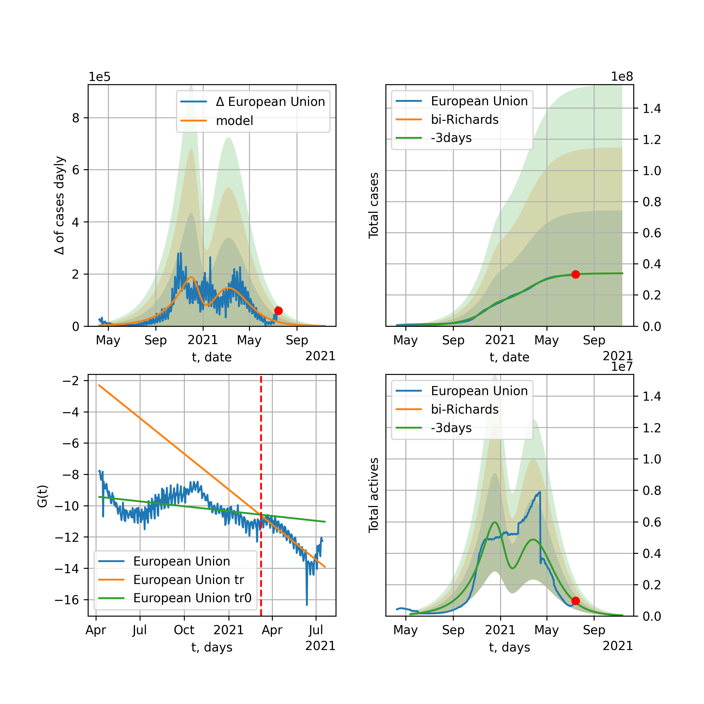

Multi-logistic model of COVID-19 dynamics
Model, code, results
Project maintained by algmaknick Hosted on GitHub Pages — Theme by mattgraham
World

World data at: 2020-06-09
+3 day model MAPE: 0.006474
model: bi-Richards
coeffs: [ 7.00666758e+06 1.31658017e+00 -8.75494317e+00 2.95439064e-02]
S.Korea scenario coeffs: [0.36242246, 2.56241634, 1.84890887, 0.13324732]
rational stdev: 0.087348
forecast at the end of period: +557 days
deltaDaycases: 1392
total cases: 14542145 ± 1270228
total death: 821374 ± 215236
bi-Richards approximation splitting point: 50
trend coefficient of determination: 0.850259
intercept: -2.470978
slope: -0.034357
trend coefficient of determination: 0.459532
intercept: -3.780153
slope: -0.009065
European Union

European Union data at: 2020-06-09
+3 day model MAPE: 0.004107
model: bi-Richards
coeffs: [ 1.53804009e+05 7.00725860e+00 -9.67663470e+00 8.35778404e-03]
rational stdev: 0.618495
forecast at the end of period: +39 days
deltaDaycases: 274
total cases: 1231627 ± 761755
total death: 132238 ± 245365
bi-Richards approximation splitting point: 83
trend coefficient of determination: 0.943264
intercept: -1.104401
slope: -0.057351
trend coefficient of determination: 0.025958
intercept: -5.018176
slope: -0.009152
Brazil

Brazil data at: 2020-06-09
+3 day model MAPE: 0.005482
model: logisticQ
coeffs: [ 1.45925551e+06 6.01934318e-06 9.05027570e+01 -1.17704552e+04]
S.Korea scenario coeffs: [0.35416971, 0.02606324, 4.35859408, 19.30413219]
rational stdev: 0.383464
forecast at the end of period: +417 days
deltaDaycases: 314
total cases: 1967283 ± 754381
total death: 102056 ± 117404
trend coefficient of determination: 0.905762
intercept_: -4.59887791660229
coeffs_: [ 0. -0.24283619 0.00127239]

Brazil data at: 2020-06-09
+3 day model MAPE: 0.028113
model: Richards
coeffs: [2.75361097e+06 8.96152570e-02 7.95665141e+01 4.30047019e-01]
S.Korea scenario coeffs: [0.36242246, 2.56241634, 1.84890887, 0.13324732]
rational stdev: 0.345849
forecast at the end of period: +487 days
deltaDaycases: 783
total cases: 3690352 ± 1276305
total death: 191443 ± 198631
trend coefficient of determination: 0.659278
intercept: -4.439274
slope: -0.054273
Russia

Russia data at: 2020-06-09
+3 day model MAPE: 0.013326
model: Richards
coeffs: [ 6.65369357e+05 1.64500412e+00 -3.89690757e+01 2.58269565e-02]
S.Korea scenario coeffs: [0.36242246, 2.56241634, 1.84890887, 0.13324732]
rational stdev: 0.491875
forecast at the end of period: +347 days
deltaDaycases: 644
total cases: 856813 ± 421445
total death: 10844 ± 16001
trend coefficient of determination: 0.962842
intercept: -1.587990
slope: -0.035411
USA

USA data at: 2020-06-09
+3 day model MAPE: 0.012060
model: Richards
coeffs: [ 2.33194845e+06 4.28606215e+00 -8.52786398e+01 8.89195172e-03]
S.Korea scenario coeffs: [0.36242246, 2.56241634, 1.84890887, 0.13324732]
rational stdev: 0.329687
forecast at the end of period: +459 days
deltaDaycases: 911
total cases: 3104186 ± 1023410
total death: 173213 ± 171318
trend coefficient of determination: 0.943533
intercept: -1.345330
slope: -0.041183
Spain

Spain data at: 2020-06-09
+3 day model MAPE: 0.000433
model: Richards
coeffs: [ 2.93264647e+05 7.18663526e+00 -4.93189391e+01 8.48237877e-03]
S.Korea scenario coeffs: [0.36242246, 2.56241634, 1.84890887, 0.13324732]
rational stdev: 0.241582
forecast at the end of period: +277 days
deltaDaycases: 118
total cases: 393726 ± 95117
total death: 36963 ± 26788
trend coefficient of determination: 0.964336
intercept: -0.676503
slope: -0.062361
Italy

Italy data at: 2020-06-09
+3 day model MAPE: 0.000716
model: Richards
coeffs: [ 2.37437538e+05 6.11031408e+00 -5.22420885e+01 9.68767822e-03]
S.Korea scenario coeffs: [0.36242246, 2.56241634, 1.84890887, 0.13324732]
rational stdev: 0.075243
forecast at the end of period: +249 days
deltaDaycases: 154
total cases: 315537 ± 23741
total death: 45601 ± 10293
trend coefficient of determination: 0.985898
intercept: -1.096132
slope: -0.056717
United Kingdom

United Kingdom data at: 2020-06-09
+3 day model MAPE: 0.000828
model: Richards
coeffs: [ 3.16930450e+05 4.05971654e+00 -6.28826532e+01 1.14416812e-02]
S.Korea scenario coeffs: [0.36242246, 2.56241634, 1.84890887, 0.13324732]
rational stdev: 0.137876
forecast at the end of period: +347 days
deltaDaycases: 182
total cases: 419671 ± 57862
total death: 59339 ± 24544
trend coefficient of determination: 0.970698
intercept: -1.381303
slope: -0.045523
France

France data at: 2020-06-09
+3 day model MAPE: 0.003903
model: bi-Richards
coeffs: [2.06936194e+04 3.98145309e+00 2.88378185e+01 1.81997030e-02]
rational stdev: 0.193019
forecast at the end of period: +39 days
deltaDaycases: 47
total cases: 162904 ± 31443
total death: 30871 ± 17876
bi-Richards approximation splitting point: 82
trend coefficient of determination: 0.895503
intercept: -0.906512
slope: -0.068899
trend coefficient of determination: 0.038463
intercept: -8.674873
slope: 0.026876
Germany

Germany data at: 2020-06-09
+3 day model MAPE: 0.003270
model: Richards
coeffs: [ 1.82322856e+05 1.08195346e+01 -4.72454958e+01 7.09633925e-03]
S.Korea scenario coeffs: [0.36242246, 2.56241634, 1.84890887, 0.13324732]
rational stdev: 0.205816
forecast at the end of period: +179 days
deltaDaycases: 155
total cases: 242249 ± 49858
total death: 11469 ± 7081
trend coefficient of determination: 0.951442
intercept: -1.345242
slope: -0.060571
Turkey

Turkey data at: 2020-06-09
+3 day model MAPE: 0.007515
model: Richards
coeffs: [ 1.70387811e+05 7.10550892e+00 -4.53543153e+01 9.14722913e-03]
S.Korea scenario coeffs: [0.36242246, 2.56241634, 1.84890887, 0.13324732]
rational stdev: 0.284103
forecast at the end of period: +196 days
deltaDaycases: 277
total cases: 217948 ± 61919
total death: 5988 ± 5103
trend coefficient of determination: 0.829983
intercept: -1.097587
slope: -0.053120
Iran

Iran data at: 2020-06-09
+3 day model MAPE: 0.005007
model: bi-Richards
coeffs: [1.44217358e+05 3.88456830e+00 3.44411009e+00 1.23743210e-02]
S.Korea scenario coeffs: [0.36242246, 2.56241634, 1.84890887, 0.13324732]
rational stdev: 0.284508
forecast at the end of period: +431 days
deltaDaycases: 81
total cases: 293745 ± 83572
total death: 14067 ± 12006
bi-Richards approximation splitting point: 75
trend coefficient of determination: 0.949245
intercept: -0.920278
slope: -0.055225
trend coefficient of determination: 0.006490
intercept: -4.404667
slope: 0.001171
Canada

Canada data at: 2020-06-09
+3 day model MAPE: 0.000977
model: Richards
coeffs: [ 1.10284876e+05 2.74897661e+00 -6.78399143e+01 1.53288135e-02]
S.Korea scenario coeffs: [0.36242246, 2.56241634, 1.84890887, 0.13324732]
rational stdev: 0.173971
forecast at the end of period: +420 days
deltaDaycases: 33
total cases: 147874 ± 25725
total death: 12082 ± 6305
trend coefficient of determination: 0.972744
intercept: -1.602169
slope: -0.044142
Belgium

Belgium data at: 2020-06-09
+3 day model MAPE: 0.001946
model: Richards
coeffs: [ 5.96135152e+04 4.73319071e+00 -3.98330304e+01 1.41375594e-02]
S.Korea scenario coeffs: [0.36242246, 2.56241634, 1.84890887, 0.13324732]
rational stdev: 0.667466
forecast at the end of period: +179 days
deltaDaycases: 89
total cases: 76842 ± 51290
total death: 12435 ± 24899
trend coefficient of determination: 0.957017
intercept: -1.248740
slope: -0.057881
Peru

Peru data at: 2020-06-09
+3 day model MAPE: 0.014973
model: Richards
coeffs: [ 6.36353884e+05 8.69288229e-01 -5.68416727e+01 2.78187303e-02]
S.Korea scenario coeffs: [0.36242246, 2.56241634, 1.84890887, 0.13324732]
rational stdev: 0.283608
forecast at the end of period: +767 days
deltaDaycases: 171
total cases: 845258 ± 239722
total death: 23805 ± 20253
trend coefficient of determination: 0.732952
intercept: -1.567186
slope: -0.027547
Netherlands

Netherlands data at: 2020-06-09
+3 day model MAPE: 0.008671
model: bi-Richards
coeffs: [3.25059298e+03 1.74405542e+01 3.69747156e+01 5.88751702e-03]
rational stdev: 0.139861
forecast at the end of period: +39 days
deltaDaycases: 5
total cases: 49530 ± 6927
total death: 6235 ± 2616
bi-Richards approximation splitting point: 75
trend coefficient of determination: 0.959531
intercept: -0.795844
slope: -0.061630
trend coefficient of determination: 0.021072
intercept: -5.229983
slope: -0.005285
India

India data at: 2020-06-09
+3 day model MAPE: 0.000261
model: Richards
coeffs: [3.28533659e+06 2.20950169e-01 3.07905282e+00 7.79243122e-02]
S.Korea scenario coeffs: [0.36242246, 2.56241634, 1.84890887, 0.13324732]
rational stdev: 0.378613
forecast at the end of period: +1047 days
deltaDaycases: 759
total cases: 4338942 ± 1642781
total death: 121607 ± 138126
trend coefficient of determination: 0.705327
intercept: -1.972317
slope: -0.024601
Switzerland

Switzerland data at: 2020-06-09
+3 day model MAPE: 0.001180
model: logisticQ
coeffs: [ 3.03216149e+04 5.92752558e-07 2.61786436e+01 -2.37548960e+05]
S.Korea scenario coeffs: [0.35416971, 0.02606324, 4.35859408, 19.30413219]
rational stdev: 0.323658
forecast at the end of period: +67 days
deltaDaycases: 21
total cases: 40756 ± 13191
total death: 2543 ± 2469
trend coefficient of determination: 0.981032
intercept_: -4.154990295315578
coeffs_: [ 0. -0.28628307 0.00149727]
Ecuador

Ecuador data at: 2020-06-09
+3 day model MAPE: 0.002575
model: Richards
coeffs: [ 5.54716005e+04 1.71591944e+00 -5.87572734e+01 2.04062606e-02]
S.Korea scenario coeffs: [0.36242246, 2.56241634, 1.84890887, 0.13324732]
rational stdev: 0.338758
forecast at the end of period: +627 days
deltaDaycases: 4
total cases: 75210 ± 25478
total death: 6319 ± 6421
trend coefficient of determination: 0.202615
intercept: -2.154279
slope: -0.036270
Portugal

Portugal data at: 2020-06-09
+3 day model MAPE: 0.007481
model: bi-Richards
coeffs: [ 2.36869759e+04 2.70024807e+00 -3.47913480e+01 1.23807898e-02]
rational stdev: 1.293513
forecast at the end of period: +207 days
deltaDaycases: 0
total cases: 51827 ± 67039
total death: 2190 ± 8498
bi-Richards approximation splitting point: 61
trend coefficient of determination: 0.881818
intercept: -0.739903
slope: -0.064607
trend coefficient of determination: 0.004593
intercept: -5.121660
slope: 0.002374
Saudi Arabia

Saudi Arabia data at: 2020-06-09
+3 day model MAPE: 0.030014
model: Richards
coeffs: [1.75211802e+05 2.16885288e-01 2.90765455e+01 1.78411990e-01]
S.Korea scenario coeffs: [0.36242246, 2.56241634, 1.84890887, 0.13324732]
rational stdev: 0.280044
forecast at the end of period: +445 days
deltaDaycases: 57
total cases: 234252 ± 65600
total death: 1689 ± 1418
trend coefficient of determination: 0.447177
intercept: -2.712338
slope: -0.032731
Sweden

Sweden data at: 2020-06-09
+3 day model MAPE: 0.016380
model: Richards
coeffs: [ 6.62481645e+04 2.24569693e+00 -1.04516277e+02 1.18279813e-02]
S.Korea scenario coeffs: [0.36242246, 2.56241634, 1.84890887, 0.13324732]
rational stdev: 0.295471
forecast at the end of period: +697 days
deltaDaycases: 16
total cases: 88367 ± 26109
total death: 9076 ± 8045
trend coefficient of determination: 0.811182
intercept: -1.456782
slope: -0.033215
Pakistan

Pakistan data at: 2020-06-09
+3 day model MAPE: 0.038027
model: Richards
coeffs: [ 4.34337447e+06 1.75687202e-01 -7.62814268e+00 6.89401643e-02]
S.Korea scenario coeffs: [0.36242246, 2.56241634, 1.84890887, 0.13324732]
rational stdev: 0.373347
forecast at the end of period: +1537 days
deltaDaycases: 695
total cases: 5739100 ± 2142674
total death: 113820 ± 127482
trend coefficient of determination: 0.421586
intercept: -2.351974
slope: -0.018362
Ireland

Ireland data at: 2020-06-09
+3 day model MAPE: 0.002576
model: logisticQ
coeffs: [ 2.47856250e+04 1.04297344e-06 3.59099566e+01 -1.15232082e+05]
S.Korea scenario coeffs: [0.35416971, 0.02606324, 4.35859408, 19.30413219]
rational stdev: 0.302413
forecast at the end of period: +109 days
deltaDaycases: 36
total cases: 32939 ± 9961
total death: 2209 ± 2004
trend coefficient of determination: 0.978032
intercept_: -4.189115836909412
coeffs_: [ 0. -0.23728735 0.00107885]
Mexico

Mexico data at: 2020-06-09
+3 day model MAPE: 0.001068
model: Richards
coeffs: [ 6.56640591e+05 4.89954439e-01 -5.83702878e+01 4.06937857e-02]
S.Korea scenario coeffs: [0.36242246, 2.56241634, 1.84890887, 0.13324732]
rational stdev: 0.175077
forecast at the end of period: +907 days
deltaDaycases: 160
total cases: 869726 ± 152268
total death: 102498 ± 53835
trend coefficient of determination: 0.896098
intercept: -2.040184
slope: -0.024556
Singapore

Singapore data at: 2020-06-09
+3 day model MAPE: 0.022689
model: bi-Richards
coeffs: [ 3.26541545e+04 7.59187801e+00 -1.30478162e+01 6.37132389e-03]
S.Korea scenario coeffs: [0.36242246, 2.56241634, 1.84890887, 0.13324732]
rational stdev: 0.259289
forecast at the end of period: +347 days
deltaDaycases: 43
total cases: 50728 ± 13153
total death: 32 ± 24
bi-Richards approximation splitting point: 60
trend coefficient of determination: 0.124339
intercept: -2.315397
slope: -0.021517
trend coefficient of determination: 0.733529
intercept: -0.121778
slope: -0.032506
Chile

Chile data at: 2020-06-09
+3 day model MAPE: 0.048561
model: bi-Richards
coeffs: [1.85962369e+05 6.92019571e-02 7.80048523e+01 1.96314103e+00]
S.Korea scenario coeffs: [0.36242246, 2.56241634, 1.84890887, 0.13324732]
rational stdev: 0.270421
forecast at the end of period: +137 days
deltaDaycases: 354
total cases: 248018 ± 67069
total death: 3966 ± 3217
bi-Richards approximation splitting point: 12
trend coefficient of determination: 0.383335
intercept: -10.588310
slope: -0.529303
trend coefficient of determination: 0.968698
intercept: -16.240852
slope: -0.121625
Israel

Israel data at: 2020-06-09
+3 day model MAPE: 0.010669
model: bi-Richards
coeffs: [1.85892865e+03 1.67432801e+01 5.50945699e+01 1.25229956e-02]
rational stdev: 0.140631
forecast at the end of period: +11 days
deltaDaycases: 19
total cases: 18817 ± 2646
total death: 307 ± 129
bi-Richards approximation splitting point: 70
trend coefficient of determination: 0.928237
intercept: -1.003839
slope: -0.092541
trend coefficient of determination: 0.578640
intercept: -16.919615
slope: 0.141938
Austria

Austria data at: 2020-06-09
+3 day model MAPE: 0.002560
model: logisticQ
coeffs: [ 1.59887745e+04 4.99726618e-07 2.42733974e+01 -3.43937490e+05]
S.Korea scenario coeffs: [0.35416971, 0.02606324, 4.35859408, 19.30413219]
rational stdev: 0.320266
forecast at the end of period: +53 days
deltaDaycases: 11
total cases: 21519 ± 6891
total death: 851 ± 817
trend coefficient of determination: 0.968447
intercept_: -3.2348859412071427
coeffs_: [ 0. -0.31538578 0.00189604]
Belarus

Belarus data at: 2020-06-09
+3 day model MAPE: 0.008400
model: Richards
coeffs: [ 7.15767409e+04 2.46996892e+00 -7.38880417e+01 1.54116446e-02]
S.Korea scenario coeffs: [0.36242246, 2.56241634, 1.84890887, 0.13324732]
rational stdev: 0.173029
forecast at the end of period: +417 days
deltaDaycases: 46
total cases: 93613 ± 16197
total death: 525 ± 272
trend coefficient of determination: 0.924049
intercept: -1.717449
slope: -0.039435
Japan

Japan data at: 2020-06-09
+3 day model MAPE: 0.003600
model: bi-Richards
coeffs: [1.47069277e+03 9.79955748e+00 4.89500819e+01 7.49182254e-03]
rational stdev: 0.711030
forecast at the end of period: +32 days
deltaDaycases: 3
total cases: 17530 ± 12464
total death: 933 ± 1990
bi-Richards approximation splitting point: 115
trend coefficient of determination: 0.000660
intercept: -3.630265
slope: -0.001573
trend coefficient of determination: 0.013111
intercept: -7.075623
slope: 0.007028
Qatar

Qatar data at: 2020-06-09
+3 day model MAPE: 0.011971
model: bi-Richards
coeffs: [ 1.91973990e+05 5.49757085e-01 -3.18750121e+01 4.93475800e-02]
S.Korea scenario coeffs: [0.36242246, 2.56241634, 1.84890887, 0.13324732]
rational stdev: 0.148200
forecast at the end of period: +921 days
deltaDaycases: 5
total cases: 260970 ± 38675
total death: 225 ± 100
bi-Richards approximation splitting point: 20
trend coefficient of determination: 0.095587
intercept: -3.992785
slope: 0.043384
trend coefficient of determination: 0.823368
intercept: -2.040515
slope: -0.025609
Poland

Poland data at: 2020-06-09
+3 day model MAPE: 0.020100
model: Richards
coeffs: [ 3.63458068e+04 2.94002469e+00 -1.04192942e+02 1.00760904e-02]
S.Korea scenario coeffs: [0.36242246, 2.56241634, 1.84890887, 0.13324732]
rational stdev: 0.337603
forecast at the end of period: +487 days
deltaDaycases: 30
total cases: 45978 ± 15522
total death: 1973 ± 1998
trend coefficient of determination: 0.793809
intercept: -1.483014
slope: -0.034700
UAE

UAE data at: 2020-06-09
+3 day model MAPE: 0.008358
model: Richards
coeffs: [ 7.33086819e+04 1.12020193e+00 -8.32982829e+01 2.49653663e-02]
S.Korea scenario coeffs: [0.36242246, 2.56241634, 1.84890887, 0.13324732]
rational stdev: 0.156713
forecast at the end of period: +641 days
deltaDaycases: 18
total cases: 97833 ± 15331
total death: 693 ± 325
trend coefficient of determination: 0.903849
intercept: -2.088309
slope: -0.032865
Romania

Romania data at: 2020-06-09
+3 day model MAPE: 0.006805
model: Richards
coeffs: [ 2.24105561e+04 3.80324176e+00 -6.34394295e+01 1.17140666e-02]
S.Korea scenario coeffs: [0.36242246, 2.56241634, 1.84890887, 0.13324732]
rational stdev: 0.219185
forecast at the end of period: +319 days
deltaDaycases: 21
total cases: 28926 ± 6340
total death: 1887 ± 1240
trend coefficient of determination: 0.926102
intercept: -1.353281
slope: -0.042478
Ukraine

Ukraine data at: 2020-06-09
+3 day model MAPE: 0.019604
model: Richards
coeffs: [ 3.54575595e+04 2.82701710e+00 -7.00391293e+01 1.33605370e-02]
S.Korea scenario coeffs: [0.36242246, 2.56241634, 1.84890887, 0.13324732]
rational stdev: 0.238715
forecast at the end of period: +487 days
deltaDaycases: 11
total cases: 47410 ± 11317
total death: 1378 ± 986
trend coefficient of determination: 0.762343
intercept: -1.490623
slope: -0.036734
Indonesia

Indonesia data at: 2020-06-09
+3 day model MAPE: 0.012674
model: Richards
coeffs: [ 1.01962725e+05 9.71918964e-01 -1.33965593e+02 1.86085492e-02]
S.Korea scenario coeffs: [0.36242246, 2.56241634, 1.84890887, 0.13324732]
rational stdev: 0.222741
forecast at the end of period: +935 days
deltaDaycases: 32
total cases: 133210 ± 29671
total death: 7744 ± 5174
trend coefficient of determination: 0.795179
intercept: -2.091776
slope: -0.025739
Bangladesh

Bangladesh data at: 2020-06-09
+3 day model MAPE: 0.007852
model: bi-Richards
coeffs: [ 8.10549107e+05 5.36265965e-01 -5.51097265e+01 3.30172779e-02]
S.Korea scenario coeffs: [0.36242246, 2.56241634, 1.84890887, 0.13324732]
rational stdev: 0.405379
forecast at the end of period: +935 days
deltaDaycases: 354
total cases: 1037732 ± 420674
total death: 14116 ± 17166
bi-Richards approximation splitting point: 29
trend coefficient of determination: 0.033241
intercept: -4.309934
slope: 0.050464
trend coefficient of determination: 0.807090
intercept: -1.065728
slope: -0.029859
South_Korea

South Korea data at: 2020-06-09
+3 day model MAPE: 0.006741
model: bi-Richards
coeffs: [ 3.79914518e+03 2.68793396e+00 -9.76185576e+01 8.67835799e-03]
rational stdev: 0.166666
forecast at the end of period: +53 days
deltaDaycases: 19
total cases: 13257 ± 2209
total death: 307 ± 153
bi-Richards approximation splitting point: 73
trend coefficient of determination: 0.865758
intercept: -1.341066
slope: -0.089485
trend coefficient of determination: 0.511619
intercept: -10.811510
slope: 0.048647
Denmark

Denmark data at: 2020-06-09
+3 day model MAPE: 0.002187
model: Richards
coeffs: [ 1.23278791e+04 1.02730759e+00 -2.88594560e+01 5.12989367e-02]
S.Korea scenario coeffs: [0.36242246, 2.56241634, 1.84890887, 0.13324732]
rational stdev: 0.278004
forecast at the end of period: +249 days
deltaDaycases: 8
total cases: 16277 ± 4525
total death: 804 ± 670
trend coefficient of determination: 0.912373
intercept: -1.733149
slope: -0.050309
Serbia

Serbia data at: 2020-06-09
+3 day model MAPE: 0.007043
model: bi-Richards
coeffs: [ 3.40579099e+03 2.83412674e+00 -4.11851388e+01 1.30559049e-02]
rational stdev: 0.134165
forecast at the end of period: +39 days
deltaDaycases: 19
total cases: 13168 ± 1766
total death: 275 ± 110
bi-Richards approximation splitting point: 50
trend coefficient of determination: 0.682781
intercept: -1.208818
slope: -0.048941
trend coefficient of determination: 0.418297
intercept: -2.829730
slope: -0.033633
Kuwait

Kuwait data at: 2020-06-09
+3 day model MAPE: 0.013205
model: bi-Richards
coeffs: [3.70184695e+04 3.34290217e-01 6.02497402e+01 2.32921885e-01]
S.Korea scenario coeffs: [0.36242246, 2.56241634, 1.84890887, 0.13324732]
rational stdev: 0.172964
forecast at the end of period: +186 days
deltaDaycases: 84
total cases: 49865 ± 8624
total death: 410 ± 212
bi-Richards approximation splitting point: 24
trend coefficient of determination: 0.004087
intercept: -3.983520
slope: -0.015511
trend coefficient of determination: 0.564602
intercept: -3.122075
slope: -0.026230
Philippines

Philippines data at: 2020-06-09
+3 day model MAPE: 0.051484
model: Richards
coeffs: [ 7.04199901e+04 1.50326212e+00 -2.06753912e+02 1.01616495e-02]
S.Korea scenario coeffs: [0.36242246, 2.56241634, 1.84890887, 0.13324732]
rational stdev: 0.362694
forecast at the end of period: +1173 days
deltaDaycases: 16
total cases: 92509 ± 33552
total death: 4091 ± 4451
trend coefficient of determination: 0.542423
intercept: -1.988743
slope: -0.027974
Norway

Norway data at: 2020-06-09
+3 day model MAPE: 0.002085
model: Richards
coeffs: [ 8.43838842e+03 7.14084289e+00 -4.28210769e+01 1.02282394e-02]
S.Korea scenario coeffs: [0.36242246, 2.56241634, 1.84890887, 0.13324732]
rational stdev: 0.175948
forecast at the end of period: +179 days
deltaDaycases: 7
total cases: 11186 ± 1968
total death: 311 ± 164
trend coefficient of determination: 0.922155
intercept: -1.112087
slope: -0.062445
Czechia

Czechia data at: 2020-06-09
+3 day model MAPE: 0.003126
model: bi-Richards
coeffs: [ 2.82167530e+03 2.62422451e+00 -2.12060931e+00 1.92781382e-02]
rational stdev: 1.069319
forecast at the end of period: +67 days
deltaDaycases: 2
total cases: 10686 ± 11427
total death: 359 ± 1151
bi-Richards approximation splitting point: 59
trend coefficient of determination: 0.406831
intercept: -1.497060
slope: -0.055498
trend coefficient of determination: 0.006055
intercept: -5.136908
slope: -0.002762
Colombia

Colombia data at: 2020-06-09
+3 day model MAPE: 0.001907
model: bi-Richards
coeffs: [ 1.82611294e+05 1.08542937e+00 -3.91280136e+01 2.43646723e-02]
S.Korea scenario coeffs: [0.36242246, 2.56241634, 1.84890887, 0.13324732]
rational stdev: 0.189425
forecast at the end of period: +697 days
deltaDaycases: 72
total cases: 245143 ± 46436
total death: 7993 ± 4542
bi-Richards approximation splitting point: 40
trend coefficient of determination: 0.751183
intercept: -1.046157
slope: -0.064779
trend coefficient of determination: 0.225510
intercept: -2.932367
slope: -0.006068
Australia

Australia data at: 2020-06-09
+3 day model MAPE: 0.001117
model: bi-Richards
coeffs: [ 1.05335851e+03 6.48013510e+00 -4.72598195e+01 7.92791312e-03]
S.Korea scenario coeffs: [0.36242246, 2.56241634, 1.84890887, 0.13324732]
rational stdev: 0.704114
forecast at the end of period: +39 days
deltaDaycases: 0
total cases: 7337 ± 5166
total death: 102 ± 215
bi-Richards approximation splitting point: 50
trend coefficient of determination: 0.755750
intercept: -0.976693
slope: -0.083560
trend coefficient of determination: 0.196020
intercept: -5.122732
slope: -0.019076
Malaysia

Malaysia data at: 2020-06-09
+3 day model MAPE: 0.011333
model: bi-Richards
coeffs: [3.91526188e+03 2.51719937e+00 2.72696806e+00 1.85221518e-02]
S.Korea scenario coeffs: [0.36242246, 2.56241634, 1.84890887, 0.13324732]
rational stdev: 0.148955
forecast at the end of period: +137 days
deltaDaycases: 0
total cases: 10467 ± 1559
total death: 146 ± 65
bi-Richards approximation splitting point: 70
trend coefficient of determination: 0.338654
intercept: -1.857674
slope: -0.045487
trend coefficient of determination: 0.084946
intercept: -3.098294
slope: -0.026803
Dominican Republic

Dominican Republic data at: 2020-06-09
+3 day model MAPE: 0.010886
model: Richards
coeffs: [ 3.71706581e+04 1.93403480e+00 -1.03036636e+02 1.28155494e-02]
S.Korea scenario coeffs: [0.36242246, 2.56241634, 1.84890887, 0.13324732]
rational stdev: 0.386866
forecast at the end of period: +641 days
deltaDaycases: 21
total cases: 47807 ± 18495
total death: 1273 ± 1477
trend coefficient of determination: 0.016160
intercept: -3.150518
slope: -0.006310
Egypt

Egypt data at: 2020-06-09
+3 day model MAPE: 0.007924
model: logisticQ
coeffs: [ 2.26133728e+05 1.16167652e-05 1.05530249e+02 -4.51317216e+03]
S.Korea scenario coeffs: [0.35416971, 0.02606324, 4.35859408, 19.30413219]
rational stdev: 0.231727
forecast at the end of period: +522 days
deltaDaycases: 53
total cases: 304173 ± 70485
total death: 10786 ± 7498
trend coefficient of determination: 0.971042
intercept_: -7.668052718481319
coeffs_: [ 0. -0.12018964 0.00060648]
Finland

Finland data at: 2020-06-09
+3 day model MAPE: 0.001716
model: Richards
coeffs: [ 7.46745345e+03 8.75042301e-01 -3.06186517e+01 5.59118542e-02]
S.Korea scenario coeffs: [0.36242246, 2.56241634, 1.84890887, 0.13324732]
rational stdev: 0.152333
forecast at the end of period: +319 days
deltaDaycases: 2
total cases: 10018 ± 1526
total death: 462 ± 211
trend coefficient of determination: 0.846419
intercept: -1.660591
slope: -0.053972
Morocco

Morocco data at: 2020-06-09
+3 day model MAPE: 0.010063
model: logisticQ
coeffs: [ 8.27913387e+03 9.40691585e-07 3.58074025e+01 -9.14541075e+04]
S.Korea scenario coeffs: [0.35416971, 0.02606324, 4.35859408, 19.30413219]
rational stdev: 0.267351
forecast at the end of period: +137 days
deltaDaycases: 8
total cases: 10999 ± 2940
total death: 273 ± 218
trend coefficient of determination: 0.968713
intercept_: -5.301809606742914
coeffs_: [ 0. -0.20481261 0.00122768]
Argentina

Argentina data at: 2020-06-09
+3 day model MAPE: 0.003191
model: Richards
coeffs: [1.50995270e+05 4.53035736e-02 1.11785596e+02 6.81768878e+00]
S.Korea scenario coeffs: [0.36242246, 2.56241634, 1.84890887, 0.13324732]
rational stdev: 0.192725
forecast at the end of period: +172 days
deltaDaycases: 125
total cases: 204566 ± 39424
total death: 5923 ± 3424
trend coefficient of determination: 0.928950
intercept: -47.396584
slope: -0.319329
Algeria

Algeria data at: 2020-06-09
+3 day model MAPE: 0.000031
model: logisticQ
coeffs: [ 1.21927054e+04 1.55623543e-06 4.86652404e+01 -3.92862366e+04]
S.Korea scenario coeffs: [0.35416971, 0.02606324, 4.35859408, 19.30413219]
rational stdev: 0.254977
forecast at the end of period: +193 days
deltaDaycases: 16
total cases: 15888 ± 4051
total death: 1108 ± 847
trend coefficient of determination: 0.951860
intercept_: -6.828575277366237
coeffs_: [ 0. -0.14795168 0.00082365]
Luxembourg

Luxembourg data at: 2020-06-09
+3 day model MAPE: 0.000973
model: bi-Richards
coeffs: [1.66547378e+02 1.84069796e+01 1.71471967e+01 6.23204610e-03]
rational stdev: 0.254246
forecast at the end of period: +25 days
deltaDaycases: 0
total cases: 4047 ± 1029
total death: 110 ± 83
bi-Richards approximation splitting point: 75
trend coefficient of determination: 0.629268
intercept: -1.688690
slope: -0.071011
trend coefficient of determination: 0.005360
intercept: -8.148963
slope: 0.009616
Thailand

Thailand data at: 2020-06-09
+3 day model MAPE: 0.002358
model: bi-Richards
coeffs: [ 2.76933693e+02 6.60843211e+00 -5.65124429e+01 6.12526412e-03]
rational stdev: 0.079029
forecast at the end of period: +53 days
deltaDaycases: 0
total cases: 3248 ± 256
total death: 60 ± 14
bi-Richards approximation splitting point: 60
trend coefficient of determination: 0.843206
intercept: -1.237813
slope: -0.117507
trend coefficient of determination: 0.112781
intercept: -12.615245
slope: 0.072993
Hungary

Hungary data at: 2020-06-09
+3 day model MAPE: 0.003464
model: Richards
coeffs: [ 4.12629484e+03 4.72253106e-01 -8.79701327e-01 1.30404136e-01]
S.Korea scenario coeffs: [0.36242246, 2.56241634, 1.84890887, 0.13324732]
rational stdev: 0.064121
forecast at the end of period: +179 days
deltaDaycases: 5
total cases: 5342 ± 342
total death: 731 ± 140
trend coefficient of determination: 0.934369
intercept: -1.727442
slope: -0.057355
Greece

Greece data at: 2020-06-09
+3 day model MAPE: 0.004841
model: logisticQ
coeffs: [ 2.84761400e+03 3.47004126e-07 2.56788533e+01 -2.98835099e+05]
S.Korea scenario coeffs: [0.35416971, 0.02606324, 4.35859408, 19.30413219]
rational stdev: 0.263059
forecast at the end of period: +67 days
deltaDaycases: 3
total cases: 3780 ± 994
total death: 226 ± 178
trend coefficient of determination: 0.923583
intercept_: -3.811248923322264
coeffs_: [ 0. -0.25358293 0.00156285]
Iraq

Iraq data at: 2020-06-09
+3 day model MAPE: 0.124124
model: bi-Richards
coeffs: [1.08643785e+04 1.39713151e-01 7.95446537e+01 7.00296692e+01]
S.Korea scenario coeffs: [0.36242246, 2.56241634, 1.84890887, 0.13324732]
rational stdev: 0.108538
forecast at the end of period: +102 days
deltaDaycases: 0
total cases: 18550 ± 2013
total death: 509 ± 165
bi-Richards approximation splitting point: 15
trend coefficient of determination: 0.974574
intercept: -294.341092
slope: -9.258069
trend coefficient of determination: 0.959159
intercept: -418.945556
slope: -2.575080
Croatia

Croatia data at: 2020-06-05
+3 day model MAPE: 0.001791
model: logisticQ
coeffs: [ 2.20436780e+03 5.83987066e-07 2.75595240e+01 -2.25766953e+05]
S.Korea scenario coeffs: [0.35416971, 0.02606324, 4.35859408, 19.30413219]
rational stdev: 0.315956
forecast at the end of period: +85 days
deltaDaycases: 1
total cases: 2963 ± 936
total death: 135 ± 127
trend coefficient of determination: 0.961524
intercept_: -2.963256038896013
coeffs_: [ 0. -0.20894978 0.00066521]
Iceland

Iceland data at: 2020-06-07
+3 day model MAPE: 0.000121
model: logisticQ
coeffs: [ 1.80327095e+03 7.80111975e-06 1.33313191e+01 -2.26781104e+04]
rational stdev: 0.056090
forecast at the end of period: +13 days
deltaDaycases: 0
total cases: 1803 ± 101
total death: 9 ± 1
trend coefficient of determination: 0.938457
intercept_: -4.892589246471218
coeffs_: [ 0. -0.26483106 0.00138924]
Estonia

Estonia data at: 2020-06-09
+3 day model MAPE: 0.008365
model: bi-Richards
coeffs: [ 1.17010796e+03 1.56142179e+00 -3.57023700e+01 1.86946022e-02]
rational stdev: 0.107726
forecast at the end of period: +102 days
deltaDaycases: 2
total cases: 2819 ± 303
total death: 99 ± 31
bi-Richards approximation splitting point: 50
trend coefficient of determination: 0.743325
intercept: -1.658562
slope: -0.077898
trend coefficient of determination: 0.039945
intercept: -6.984727
slope: 0.014381
Bulgaria

Bulgaria data at: 2020-06-09
+3 day model MAPE: 0.010137
model: bi-Richards
coeffs: [-109.74380907 0.54999894 64.04602873 2.12056968]
rational stdev: 0.123331
forecast at the end of period: +67 days
deltaDaycases: 0
total cases: 3147 ± 388
total death: 181 ± 66
bi-Richards approximation splitting point: 70
trend coefficient of determination: 0.903545
intercept: -12.625820
slope: -0.138089
trend coefficient of determination: 0.466637
intercept: -28.538686
slope: 0.091392
New Zealand

New Zealand data at: 2020-05-28
+3 day model MAPE: 0.001125
model: logisticQ
coeffs: [ 1.48316442e+03 2.61946481e-06 2.50154651e+01 -9.24244019e+04]
S.Korea scenario coeffs: [0.35416971, 0.02606324, 4.35859408, 19.30413219]
rational stdev: 0.274300
forecast at the end of period: +79 days
deltaDaycases: 0
total cases: 2007 ± 550
total death: 29 ± 23
trend coefficient of determination: 0.902211
intercept_: -3.5729578368920185
coeffs_: [ 0. -0.17986227 0.00021014]
Slovenia

Slovenia data at: 2020-06-09
+3 day model MAPE: 0.005331
model: bi-Richards
coeffs: [-7.92465347 0.41365281 61.48978732 1.18710343]
rational stdev: 0.192425
forecast at the end of period: +39 days
deltaDaycases: 0
total cases: 1480 ± 284
total death: 108 ± 62
bi-Richards approximation splitting point: 75
trend coefficient of determination: 0.891724
intercept: -6.413394
slope: -0.148597
trend coefficient of determination: 0.185213
intercept: -24.461110
slope: 0.090254
Slovakia

Slovakia data at: 2020-06-09
+3 day model MAPE: 0.001316
model: logisticQ
coeffs: [ 1.51339951e+03 2.22972475e-04 2.40165053e+01 -5.56131527e+02]
S.Korea scenario coeffs: [0.35416971, 0.02606324, 4.35859408, 19.30413219]
rational stdev: 0.221532
forecast at the end of period: +95 days
deltaDaycases: 0
total cases: 2044 ± 452
total death: 37 ± 24
trend coefficient of determination: 0.926867
intercept_: -3.597853565923211
coeffs_: [ 0. -0.24454709 0.00134327]
Lithuania

Lithuania data at: 2020-06-09
+3 day model MAPE: 0.007417
model: bi-Richards
coeffs: [3.17658547e+02 1.50225750e-01 5.49005175e+01 6.16486018e-01]
rational stdev: 0.153750
forecast at the end of period: +10 days
deltaDaycases: 1
total cases: 1751 ± 269
total death: 73 ± 33
bi-Richards approximation splitting point: 48
trend coefficient of determination: 0.900098
intercept: -3.134123
slope: -0.146976
trend coefficient of determination: 0.123329
intercept: -8.754897
slope: -0.017111
Latvia

Latvia data at: 2020-06-09
+3 day model MAPE: 0.003773
model: Richards
coeffs: [ 1.09350630e+03 8.86040186e+00 -7.38202236e+01 6.24522841e-03]
S.Korea scenario coeffs: [0.36242246, 2.56241634, 1.84890887, 0.13324732]
rational stdev: 0.245930
forecast at the end of period: +207 days
deltaDaycases: 1
total cases: 1370 ± 336
total death: 32 ± 23
trend coefficient of determination: 0.583305
intercept: -1.708647
slope: -0.055643
Cyprus

Cyprus data at: 2020-06-09
+3 day model MAPE: 0.005081
model: bi-Richards
coeffs: [ 8.52163377e+01 1.14782747e+01 -2.34025652e+00 6.24962341e-03]
rational stdev: 0.121229
forecast at the end of period: +11 days
deltaDaycases: 0
total cases: 982 ± 119
total death: 18 ± 6
bi-Richards approximation splitting point: 70
trend coefficient of determination: 0.728114
intercept: -1.361126
slope: -0.075045
trend coefficient of determination: 0.000901
intercept: -6.729422
slope: 0.005018
Malta

Malta data at: 2020-06-09
+3 day model MAPE: 0.004849
model: bi-Richards
coeffs: [1.63218613e+02 1.55638377e-01 6.46296182e+01 2.13421181e+00]
rational stdev: 0.207618
forecast at the end of period: +11 days
deltaDaycases: 0
total cases: 623 ± 129
total death: 8 ± 4
bi-Richards approximation splitting point: 50
trend coefficient of determination: 0.912441
intercept: -7.069183
slope: -0.270488
trend coefficient of determination: 0.383203
intercept: -14.551486
slope: -0.060878
Sri Lanka

Sri Lanka data at: 2020-06-09
+3 day model MAPE: 0.023592
model: Richards
coeffs: [ 9.46067743e+03 4.70130480e-01 -1.25641117e+02 3.17445483e-02]
S.Korea scenario coeffs: [0.36242246, 2.56241634, 1.84890887, 0.13324732]
rational stdev: 0.120695
forecast at the end of period: +1187 days
deltaDaycases: 1
total cases: 12508 ± 1509
total death: 74 ± 26
trend coefficient of determination: 0.028606
intercept: -3.608849
slope: -0.009874
References
- Worldometers COVID-19 Coronavirus Pandemic
- Su COVID-19 susijusi gyventojų ir verslo statistika
- Bi-logistic growth
- Least squares
- scikit-learn
- scipy.org
- European Centre for Disease Prevention and Control An agency of the European Union
- Aaron Miller, Mac Josh Reandelar, Kimberly Fasciglione, Violeta Roumenova, Yan Li, Gonzalo H Otazu, Correlation between universal BCG vaccination policy and reduced morbidity and mortality for COVID-19: an epidemiological study, https://doi.org/10.1101/2020.03.24.20042937